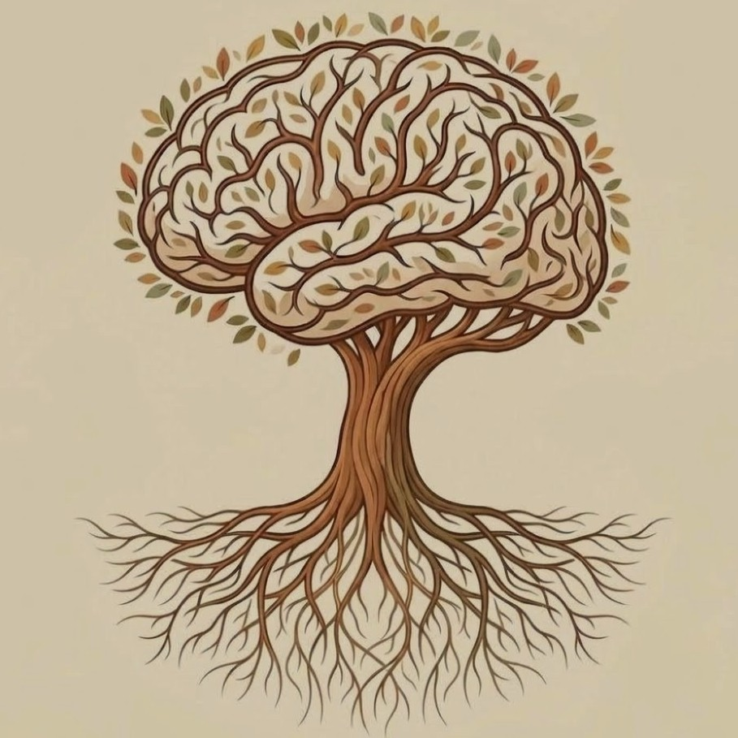

Polyvagal Services & Life Coaching

Polyvagal Services / Life Coaching offers a personalized approach to understanding the relationship between the nervous system, emotional experiences, and everyday behaviors. Drawing on Polyvagal Theory, this approach explores how individuals experience stress, perceived safety, and their interactions with their surroundings. Through somatic breathing practices and individualized guidance, individuals can explore their responses to everyday experiences and develop new approaches to personal well-being.
Benefits may include:
- Somatic Breathing & Mind-Body Awareness: Somatic breathing encourages individuals to pay attention to their breathing patterns and physical responses as a way of becoming more aware of their internal experiences. Practicing intentional breathing may help individuals recognize signs of tension, become more attentive to their body's responses, and develop practical techniques for navigating moments of stress.
- Greater Self-Awareness & Recognition of Personal Patterns: Exploring the connections between emotions, physical responses, and behaviors can help individuals recognize patterns in how they respond to different situations. This awareness may provide greater insight into personal triggers, habitual reactions, and the experiences that influence their thoughts, feelings, and behaviors.
- Developing Healthier Responses to Stress: Recognizing individual responses to stress and everyday pressures can help individuals identify automatic reactions and explore alternative ways of navigating difficult experiences. Developing greater awareness of these patterns may encourage more intentional responses, greater adaptability, and increased confidence in managing daily stressors.
- Personal Growth & Interpersonal Connection: Exploring personal goals, values, relationships, and experiences can help individuals gain greater clarity about what matters to them and how they want to move forward. This process may encourage more intentional decision-making, stronger interpersonal connections, and greater confidence in navigating everyday life.
Each person's experience is unique, and progress will vary depending on individual circumstances, goals, and engagement. Polyvagal Services & Life Coaching consultations are intended as complementary personal development and educational wellness services, not substitutes for mental health care, psychotherapy, financial and legal advice, or medical treatment.